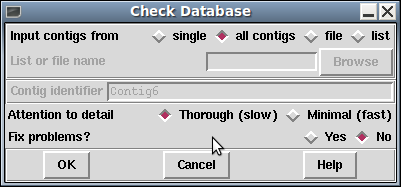

Gap5 cannot directly work on assembly formats in their native format. This is a substantial difference from things like BAM file viewers, but the reason is simply that the other formats do not have data structured in a manner that is suitable for in-place editing. Gap5 is first and foremost an assembly editor.
Gap5 databases are currently created external to Gap5 using a
command-line program named tg_index.
tg_index [options] input_file ...
The most general usage is simply to specify one or more data files
(it accepts SAM/BAM, CAF, ACE, BAF, MAQ and in a more limited fashion
fasta/fastq), optionally specifying the output database with -o
database_name. This will then create a database suitable for editing
by Gap5.
Valid options are:
-m
-M
-A
-B
-C
-f
-F
-b
-s
-u
-x
-r
-R
-D
-p
-P
-q value
-a
-n
-g
-t
-T
-z value
-f
-d data_types
-c method
-[1-9]
-v version_num
To merge existing gap5 databases you will need to export either one or both into an intermediate format (we suggest SAM) and then use tg_index to import data again.
The Open menu item is in the main gap5 File menu. It brings up a file browser allowing selection of the gap5 database name. Databases consist of two files - a main data block (.g5d) and a data index (.g5x). It does not matter which you choose as gap5 will open both.
Alternatively you can specify the database name on the command line when
launching gap5. Additionally this supports read-only access if you
specify the -ro flag. For example to open a database named Egu.0
(the old Gap4 convention implying version 0) in read-only mode we would
type:
gap5 -ro Egu.0 &
By default gap5 changes to the directory containing the database you have open. All local output files specified (for example Save Consensus or Export Sequences) will be relative to that location unless you use a full pathname. The current working directory may be changed by using the Change Direction dialogue, found in the main File menu.
This function (which is available from the Gap5 File menu) is used to perform a check on the logical consistency of the database. No user intervention is required. If the checks are passed the program will report zero errors. Otherwise a report of each error is displayed.

On a large database these checks can take a considerable amount of time. The default is a thorough, but slow, check. However a faster mode is available which only performs gross contig and contig-binning level checks, omitting the per sequence and per annotation validation.
The dialogue also offers the choice of attempting to fix any problems that are found. It is strongly recommended that you back the gap5 database up prior to performing fixes as depending on the nature of the corruption the choices made may not necessarily be an improvement. Note that this also may not fix every problem that is found, or the fixes themselves may cause other errors to be found so it is best to recheck again.